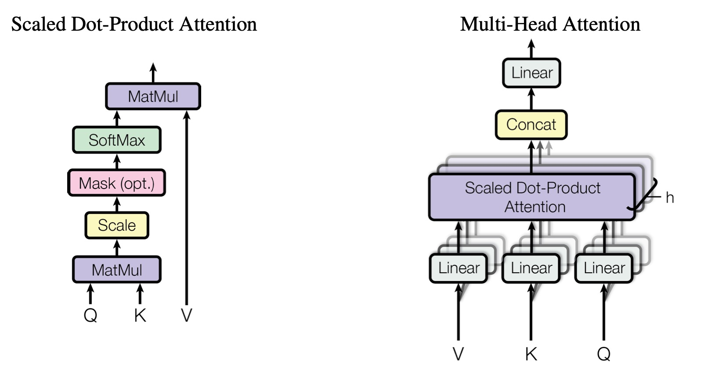
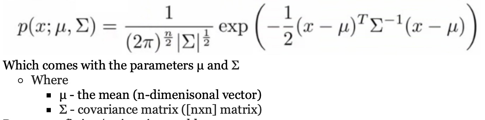

import torchKeywords:
einsum, matrix multiplications, multidimensional linear algebra, multi-head attention.
Why should you use einsum?
Working on higher dimensional algebra like tensor multiplications/additions, they used to make picture perfect sense on paper. When trying to implement using APIs/frameworks like numpy/torch, I always end up in lots of confusion and frequently would have to check the resultant tensor shapes. Here comes einsum to the resuce for me. Einsum is easy to learn and all you need to know is, to understand the tensor shapes and how the resulting tensor should look like. Einsum is also able to perform multiple operations on resultant tensor like swap axes/transpose. Also most of the APIs be it numpy, torch, tensorflow has a builtin einsum function. As easy as it sounds, in my experience most of the machine learning enthusiasts have never come across this function and not everyone knows about this simple yet magical function. So lets directly jump to an example of 3D matrix multiplications, first we perform traditional way of multiplication and later look at the einsum way.
Lets say, we have to multiply two matrices of shapes (3, 4) and (3, 1, 9). For this, the only way is to bump the first matrix to 3D with shape (3, 4, 1) and multiply. Then resultant matrix would be of shape (3, 4, 9). This is usally done in torch as below
A = torch.randn(3, 4)
B = torch.randn(3, 1, 9)
# Bump A to 3D
A = A.unsqueeze(-1)
print(f'matrix A Shape: {A.shape}')
# Use torch matmul for matrix multiplication
resultant = torch.matmul(A, B)
print(f'Resultant matrix shape: {resultant.shape}')matrix A Shape: torch.Size([3, 4, 1])
Resultant matrix shape: torch.Size([3, 4, 9])Same multiplication in einsum is computed as
A = torch.randn(3, 4)
B = torch.randn(3, 1, 9)
es_resultant = torch.einsum('ij, iqr -> ijr', A, B)
print(f'Einsum resultant matrix shape: {es_resultant.shape}')Einsum resultant matrix shape: torch.Size([3, 4, 9])As you see, it works without any need for dimensional bumping. For me this is in very handy, when implementing the multihead attention in vanilla transformer as matrices are 4D. Further in this page, lets us go through how to use einsum and few of its applications in linear algebra.
How to use einsum?
As you see in the above cell, there are two major arguments given to the torch.einsum. The second argument is self explanatory as they are the matrices we want to operate on, here by referred as operands as in [1]. The important part of einsum is the first argument which is the equation. The equation is further divided into two parts, first part consisting of the indices of the matrices we are operating on. These are to the left side of the ‘->’ and on the right side, we state the indices we want. Lets see a simple example of matrix transpose.
#----------------------
# Transpose of a matrix
#----------------------
A = torch.randn(7, 5)
print(f'matrix A shape: {A.shape}')
A_T = torch.einsum('ij->ji', A)
print(f'matrix A transpose shape: {A_T.shape}')matrix A shape: torch.Size([7, 5])
matrix A transpose shape: torch.Size([5, 7])In the above transpose example, we see that the left side of the equation consists of original indices order \((i,j)\) and to the right side, we specify the order of indices we need \((j, i)\). ### Other matrix operations
#--------------------------
# Sum of elements in matrix
#--------------------------
A = torch.tensor([[1, 2],[3, 4]])
print(f'matrix A:\n{A}\n')
sum_A = torch.einsum('ij->', A)
print(f'Sum of elements: {sum_A}')matrix A:
tensor([[1, 2],
[3, 4]])
Sum of elements: 10#--------------------------------------
# Sum across columns and rows in matrix
#--------------------------------------
column_sum = torch.einsum('ij -> j', A)
print(f'Sum across columns: {column_sum}')
row_sum = torch.einsum('ij -> i', A)
print(f'Sum across rows: {row_sum}')Sum across columns: tensor([4, 6])
Sum across rows: tensor([3, 7])#---------------------
# Vector outer product
#---------------------
vec_A = torch.randn(3, 1)
vec_B = torch.randn(4, 1)
outer_AB = torch.einsum('ij, pj -> ip', vec_A, vec_B)
print(f'Outer product shape: {outer_AB.shape}')
#---------------------------
# Vector dot (inner) product
#---------------------------
vec_A = torch.tensor([[4, 2, 3]])
vec_B = torch.tensor([[1, 1, 1]])
inner_AB = torch.einsum('ij,ij->', vec_A, vec_B)
print(f'\nDot product:\n{inner_AB}')Outer product shape: torch.Size([3, 4])
Dot product:
9#---------------------------
# Matrix multiplication (2D)
#---------------------------
A = torch.randn(3, 7)
B = torch.randn(7, 4)
matmul = torch.einsum('ij, jp -> ip', A, B)
print(f'Resultant shape: {matmul.shape}')Resultant shape: torch.Size([3, 4])#---------------------------------------
# Matrix Element wise (Hadamard) product
#---------------------------------------
A = torch.tensor([[1, 2], [3, 4]])
B = torch.tensor([[1, 0], [0, 1]])
print(f'matrix A:\n{A}\n')
print(f'matrix B:\n{B}\n')
element_product = torch.einsum('ij, ij -> ij', A, B)
print(f'Elementwise product:\n{element_product}')matrix A:
tensor([[1, 2],
[3, 4]])
matrix B:
tensor([[1, 0],
[0, 1]])
Elementwise product:
tensor([[1, 0],
[0, 4]])I think, this gives better understanding on how to use einsum.
Practical usage:
Furthermore lets see how einsum is used in real world examples. Take Transformers for example first proposed in [2], they took the field of deep learning in a whole new direction (in my opinion). Curcial part of transformers is multihead attention block as depicted in below image. 
The above image is taken from [2]. Let us implement this block using einsum.
# d_model = 512, d_k = 64, num_heads(h) = 8 as stated in paper [2].
# Initialize Linear layers
w_q = torch.randn(64, 64)
w_k = torch.randn(64, 64)
w_v = torch.randn(64, 64)
final_linear = torch.randn(512, 512)
query= key= value= torch.randn(16, 10, 512) #(batch_size, n_tokens, embedding_size)
# split the data for multiple heads
query = query.reshape(16, 10, 8, 64) #(batch_size, n_tokens, num_heads, d_k)
key = key.reshape(16, 10, 8, 64)
value = value.reshape(16, 10, 8, 64)
# Linear projection
Q = torch.einsum('ijkl, lp -> ijkp', query, w_q)
K = torch.einsum('ijkl, lp -> ijkp', key, w_k)
V = torch.einsum('ijkl, lp -> ijkp', value, w_v)
# Scaled dot product attention
Q_K = torch.einsum('ijkl, ijrl -> ijkr', Q, K)
Q_K /= torch.sqrt(torch.tensor(64))
softmax_op = torch.nn.functional.softmax(Q_K, dim=-1)
attention_weights = torch.einsum('ijkl, ijlr -> ikjr', softmax_op, V)
# Concatenate multiple attention head outputs
concatenated_weights = attention_weights.reshape(16, 10, -1)
output = torch.einsum('ijk, kl -> ijl', concatenated_weights, final_linear)
print(output.shape)torch.Size([16, 10, 512])In general, one can find lot of implementations of multihead attention using torch.bmm( ). Objective here is to show that this can be easily performed using einsum. ### Exercise: Objective: Try to compute gaussian distribution (in both 1D and 2D) using einsum. In depth details of gaussian distribution can be found here in [3]. The below image depicts the guassian distribution formula taken from [3]. 
References:
- Pytorch contributors, torch.einsum, 2023. https://pytorch.org/docs/stable/generated/torch.einsum.html
- Vaswani, Ashish, et al. “Attention is all you need.” Advances in neural information processing systems 30 (2017).
- Professor Ng, Anomaly detection - Stanford machine learning, 2019. http://www.holehouse.org/mlclass/15_Anomaly_Detection.html